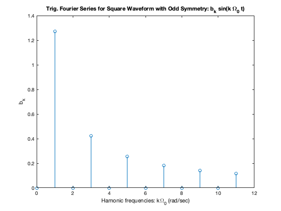
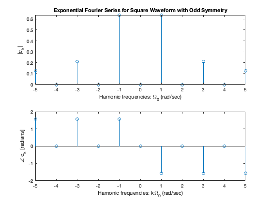

A PDF version of this FAQ is FAQ.pdf.
I thank the following students who helped me to recognise the holes in my course notes and were the inspiration for these answers.
Fundamental frequency -- A periodic signal $f(t) = f(t + nT),\; n\in \mathbb{Z}$ has period $T$ s and a fundamental frequency $f_0 = 1/T$ Hz. When used in Fourier series and Fourier transforms, frequencies are expressed as $\omega$ in radians/second. The fundamental frequency is $\omega = \Omega_0 = 2 \pi f_0$ or, equivalently, $\Omega_0 = 2 \pi /T$ rad/s.
Harmonic frquencies (or Harmonics) are simply integer multiples of the fundamental frequency $\Omega_0$. So the zero-th harmonic is $\Omega_0 = 0$ rad/s or DC. The first harmonic is $1.\Omega_0 = \Omega_0$, the second is $2 \Omega_0$, the third $3 \Omega_0$ etc.
In general, we can express the $k$-th harmonic as $k\Omega_0,\; k\in \mathbb{Z}$.
In trig. Fourier series, the coefficients $a_k$ and $b_k$ are the amplitudes of the $\cos(k\Omega_0 t)$ and $\sin(k \Omega_0 t)$ terms respectively. We usually show these terms as lines (or spectra) with height $a_k$ and/or $b_k$ plotted against the harmonic frequency index $k$.
An example of such a plot is reproduced from Line Spectra for Trig. FS.

For exponential Fourier Series, the harmonic terms are defined as $$C_k \exp(jk\Omega_0 t)\,k = -\infty, \dots, -2, -1, 0, 1, 2,\ldots, \infty.$$ And $\left|C_k\right|$ and $\angle C_k$ are plotted as the line spectra against $k$. Note that $C_{-k}$ and $C_k$ are complex conjugates $\forall k > 0$. Hence, the spectrum will be symmetric around $k=0$.
An example of such a plot is reproduced from Line Spectra for Exp. FS.

In the notes Steady-State Response of an LTI System to a Periodic Signal we state (without proof) that the output of an LTI system to a periodic function with period $T$ represented by a Fourier series is given by:
$$y(t)=\sum_{k=-\infty}^{\infty} C_kH(jk\Omega_0)e^{jk\Omega_0 t}.$$As a consequence
Thus $y(t)$ is a Fourier series itself with coefficients $D_k$:
$$D_k = C_kH(jk\Omega_0).$$What is missing from this analaysis is a discussion of what $H(jk\Omega_0)$ looks like.
As an example, consider the simple first-order Butterworth low-pass (LP) filter with cut-off frequency $\omega_c$:
$$H(s) = \frac{\omega_c}{s + \omega_c}$$For this filter
$$H(j\omega) = \frac{\omega_c}{j\omega + \omega_c}.$$Let us say that we wish to compute the attenuation and phase of this filter at $\omega = \Omega_0$.
To compute the magnitude: $$\begin{eqnarray*} \left|H(j\Omega_0)\right| &=& \left|\frac{\omega_c}{j\Omega_0 + \omega_c}\right| \\ & = & \frac{\omega_c}{\sqrt{\Omega_0^2 + \omega_c^2}} \end{eqnarray*}$$
We note that is $\left|H(j\Omega_0\right| \lt 1$ so the filter will attenuate the incoming harmonic frequency. This will be true for all harmonics, so in general, for a LP filter:
$$D_k = C_k\left|H(jk\Omega_0)\right| < C_k.$$The phase will be given by $$\phi = \angle H(j\omega) = \tan^{-1}\left(\frac{\Im \left( H(j\omega)\right)}{\Re \left(H(j(\omega)\right)}\right)$$ where $$\begin{eqnarray*} H(jk\Omega_0) &=& \frac{\omega_c^2}{(k\Omega_0)^2 + \omega_c^2} - j\frac{k\Omega_0\omega_c}{(k\Omega_0)^2 + \omega_c^2}\\ \phi_k &=& \tan^{-1}\left(-\frac{K\Omega_0\omega_c}{\omega_c^2}\right) \\ &=& \tan^{-1}\left(-\frac{k\Omega_0}{\omega_c}\right) \end{eqnarray*} $$
Phases are additive so $$\angle D_k = \angle C_k + \phi_k.$$
By doing such analysis, we can examine the effect of a filter on a periodic signal, just by considering how the coefficients of the harmonic terms are changed (attenuated in magnitude and shifted in phase) by the filter.